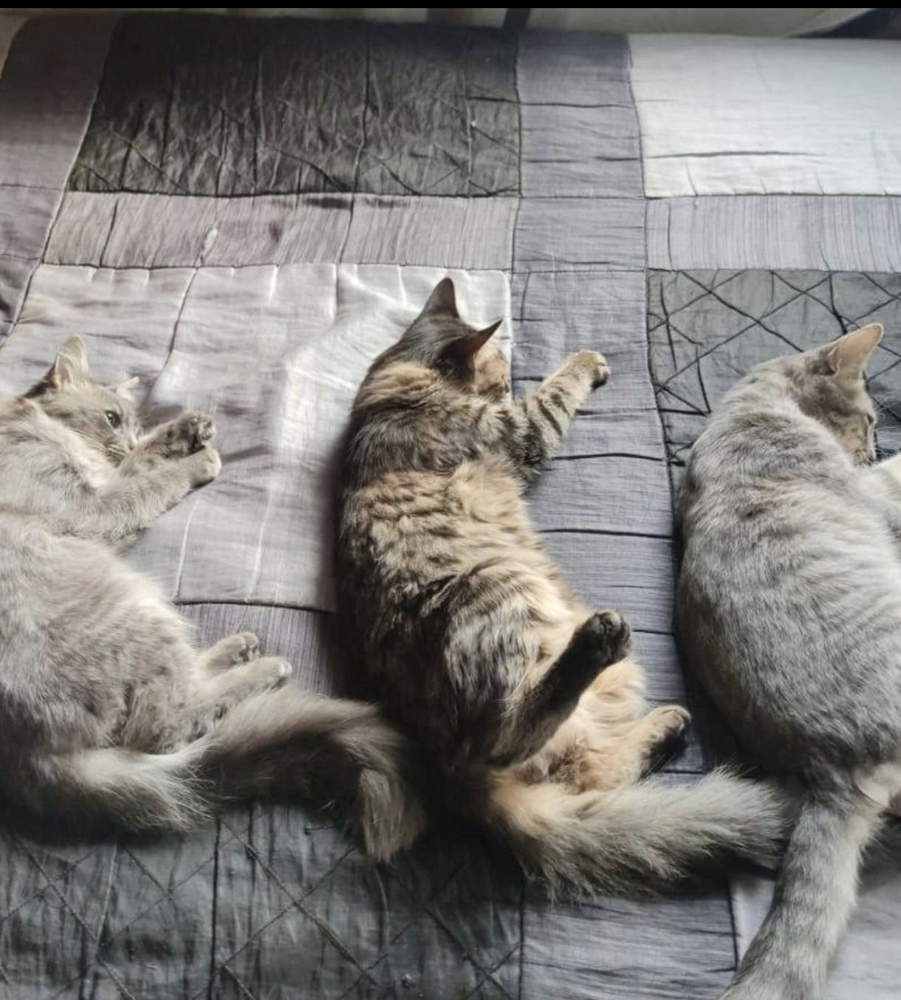
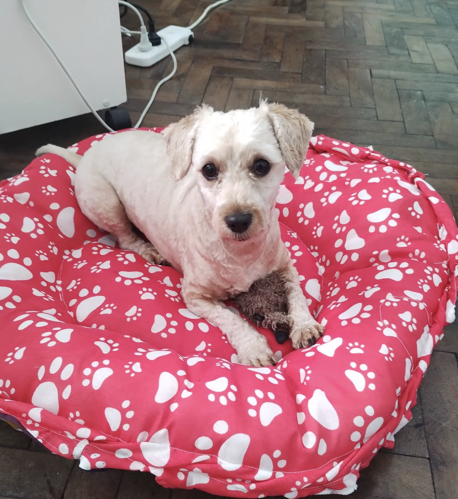
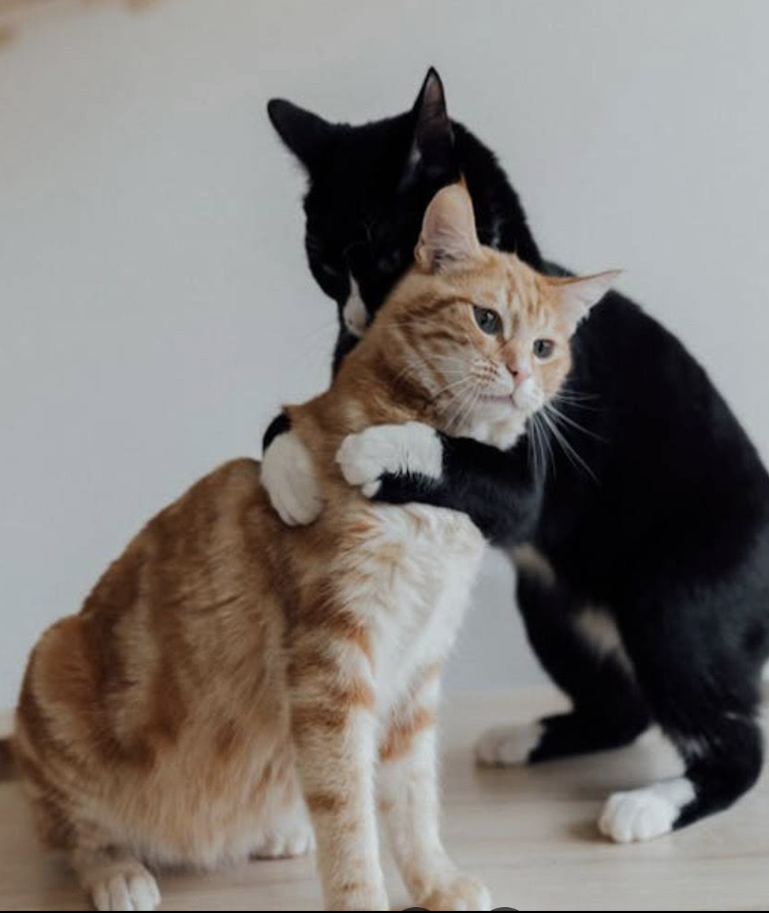
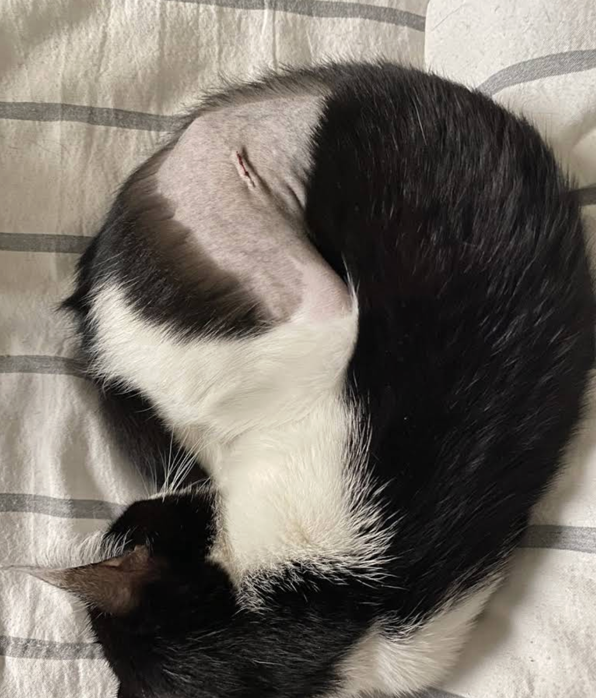
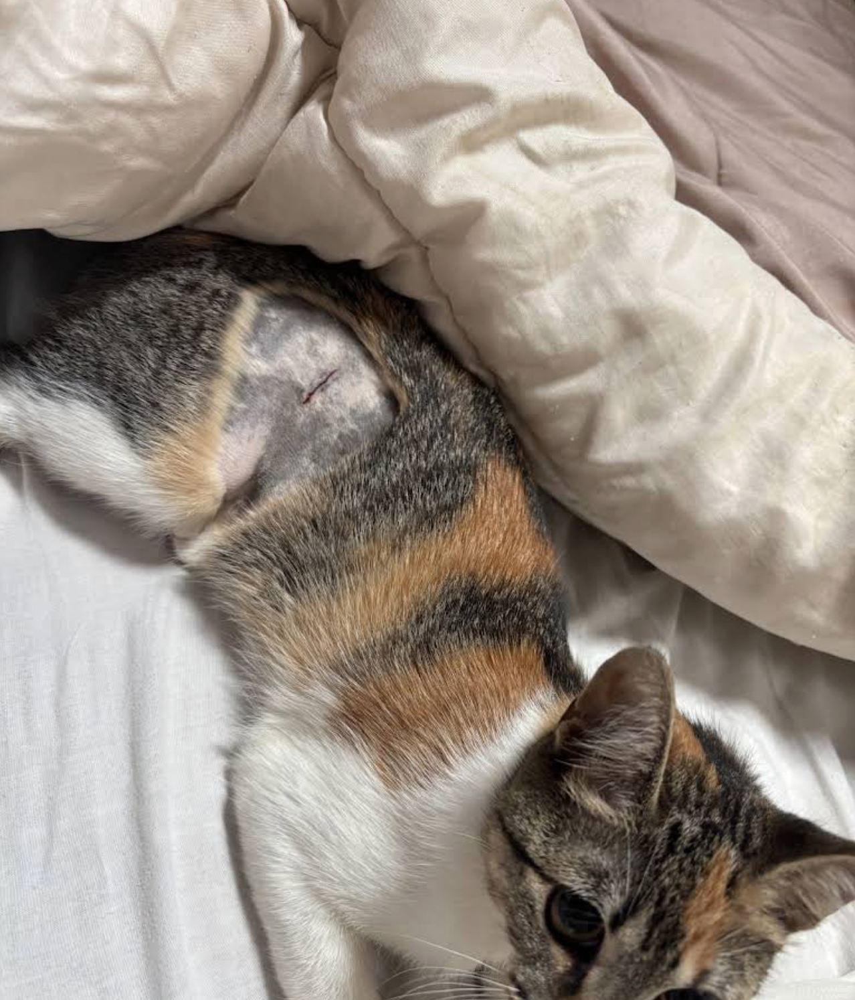
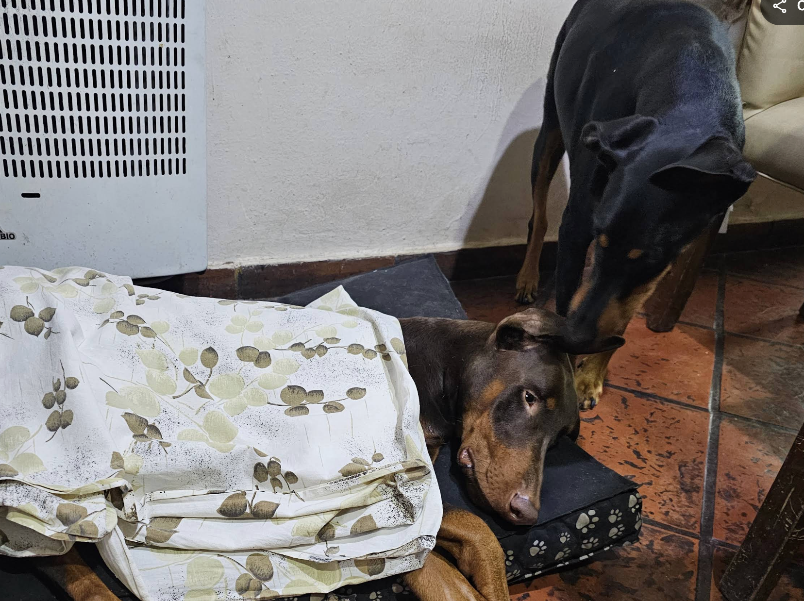

Galería
Mascotas recuperadas, mascotas en observación y resultados reales.




Castraciones rápidas, seguras e higiénicas.
Realizadas por un profesional con más de 30 años de experiencia.
La salud y bienestar de su mascota es lo más importante. Nuestro compromiso es brindar un servicio profesional, responsable y seguro en cada procedimiento.
El Dr. Pablo Sáenz de Zumarán ejerce la medicina veterinaria desde hace más de tres décadas.
Su trayectoria y dedicación brindan confianza y seguridad a cada paciente.
Durante todos estos años ha realizado procedimientos con responsabilidad, profesionalismo y compromiso con la salud animal.
Mostramos casos reales de mascotas que fueron intervenidas y tuvieron una recuperación segura, rápida e higiénica.
Cada procedimiento es realizado con responsabilidad profesional y seguimiento adecuado.



Miles de dueños confían en nuestro trabajo.
"Excelente profesional, transmite mucha confianza."
"Todo fue rápido, seguro y muy bien explicado."
"Se nota la experiencia y el cuidado hacia los animales."
"Muy recomendable."
"Mi mascota se recuperó perfectamente."
Mascotas recuperadas, mascotas en observación y resultados reales.



Valoramos su comodidad, por eso aceptamos múltiples formas de pago.
El precio del procedimiento es a convenir según cada caso.
¿Tiene dudas?
¿Desea consultar por el procedimiento?
Estamos para ayudarlo.
Consultar por WhatsApp